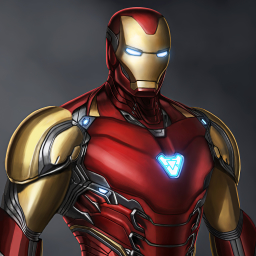
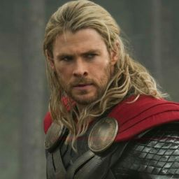
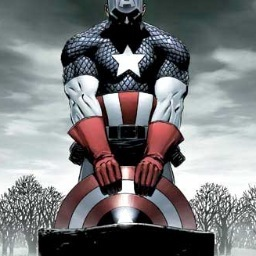
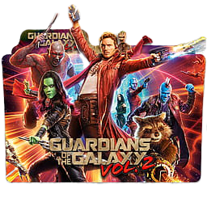
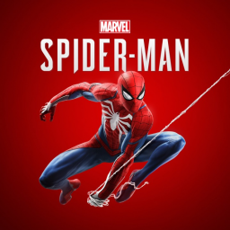

|  |
Anthony Edward Stark, más conocido como Tony Stark, un multimillonario magnate empresarial estadounidense,
playboy e ingenioso cientifico, sufre una grave lesión en el pecho durante un secuestro. Cuando sus captores intentan forzarlo a construir
un arma de destrucción masiva crea, en cambio, una armadura poderosa para salvar su vida y escapar del cautiverio. Más tarde, Stark desarrolla su traje,
agregando armas y otros dispositivos tecnológicos que diseñó a través de su compañía, Industrias Stark. Él usa el traje y las versiones sucesivas para proteger al mundo como Iron Man. |
|  |
El personaje, que se basa en la deidad nordica del mismo nombre, es el dios del trueno asgardiano poseedor del martillo encantado, Mjolnir,
que le otorga la capacidad de volar y manipular el clima entre sus otros atributos sobrehumanos. |
|  |
cuyo nombre real es Steven "Steve" Rogers, es un superhéroe ficticio que aparece en los cómics estadounidenses publicados por Marvel Comics. Creado por los historietistas Joe Simon y Jack Kirby,
el personaje apareció por primera vez en Captain America Comics (marzo de 1941) de Timely Comics, predecesor de Marvel Comics. El Capitan America fue diseñado como un supersoldado patriota que luchaba frecuentemente contra
las potencias del Eje en la Segunda Guerra Mundial, y fue el personaje mas popular de Timely Comics durante el periodo de guerra. |
 |
es una superheroína ficticia que aparece en el cómic estadounidense y libros publicados por Marvel Comics. Creado por el editor y trazador Stan Lee, el guionista Don Rico y el artista Don Heck,
el personaje debutó en Tales of Suspense (abril de 1964). El personaje fue presentado como una espia rusa, una antagonista del superheroe Iron Man. Mas tarde, deserto a los Estados Unidos, convirtiendose en una agente de la
organización ficticia S.H.I.E.L.D. |
|  |
Los Guardianes de la Galaxia originales, era un equipo de superheroes galacticos que operaban en el lejano siglo XXXI, en una línea de tiempo alternativa del Universo Marvel denominada Tierra-691.
Los miembros originales del equipo incluían a Mayor Vance Astro, un astronauta terrícola del siglo XX que pasó viajando mil años para poder llegar hasta Alfa Centauri en animación suspendida.
El es tambien homologo el futuro del universo alternativo de Vance Astrovik, el heroe conocido como Justice. |
 |
es un personaje ficticio que aparece en los cómics estadounidenses publicados por Marvel Comics. Creado por el escritor / artista Jack Kirby y el escritor Stan Lee, Fury apareció por primera vez en Sgt.
Fury y sus Comandos Aulladores # 1 (mayo de 1963), una serie de combates de la Segunda Guerra Mundial que retrata a Fury que mastica cigarros como lider de una elite del ejercito de los Estados Unidos. Un personaje popular durante varias decadas. |
|  |
Spider-Man es el alias de Peter Parker, un huérfano criado por su tía May y su tío Ben en la Ciudad de Nueva York después de que sus padres Richard y Mary Parker murieron en un accidente aéreo.
Lee y Ditko tuvieron que lidiar con los problemas de la adolescencia y los problemas financieros, y lo acompañaron con muchos personajes de apoyo, como J. Jonah Jameson, Flash Thompson, Harry Osborn, los intereses románticos,
Gwen Stacy y Mary Jane Watson, y enemigos como el Doctor Octopus, Kingpin, Duende Verde y Venom. Su historia de origen lo tiene adquiriendo habilidades relacionadas con la araña después de un mordisco de una araña radioactiva;
estos incluyen aferrarse a las superficies, disparar telarañas desde dispositivos montados en la muñeca y detectar el peligro con su "sentido aracnido". |